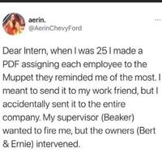

0

An anonymous reader quotes a report from Bloomberg: While traditional hotspots in the region such as Thailand, South Korea and Malaysia focus on services such as cosmetic surgery, IVF or physicals, China is trying to differentiate itself by providing some of the world's most advanced procedures. "There are two reasons why a patient travels for medical treatments: availability of advanced treatments and price," said Victor Cao, operations director of Joyful Medical, an agency in Shanghai that connects international patients to advanced cancer therapies in China. "Chinese people used to travel overseas for treatments that were not available at home, but now tables have turned."
As expanding visa-free policies eased travel in the past year or so, videos are proliferating on social media of foreigners recounting their positive experiences of treatment in China, usually for consumer procedures like acupuncture and tooth scaling. But one treatment that's more quietly gaining traction is CAR-T, among the most promising breakthroughs in oncology but unavailable in most countries, or extremely costly. The process sees doctors collect T cells from the patient's blood then modify them in a lab to produce a special receptor, CAR, that can bind to a specific protein on cancer cells. These engineered cells are then multiplied into large numbers and infused back into the patient. The CAR-T cells seek out cancer cells carrying the target antigen and kill them. In the US, one single infusion can cost between $300,000 to $475,000, according to the American Cancer Society. In China, the equivalent costs about $150,000 to $180,000, and it could get even cheaper -- its drug regulator recently accepted a marketing application for a therapy aimed to be priced below 300,000 yuan ($44,000).
China's medical tourism market remains in its infancy. Lecheng International Medical Tourism Pilot Zone in Hainan, which was designated as the country's only special medical zone in 2013, treated just a few thousand foreign medical tourists last year, compared to hundreds of thousands of domestic patients who visited. There, patients can access advanced drugs, devices, and therapies approved in other countries but not elsewhere in mainland China. But China is pushing to upgrade its economy and reshape its global image from just a manufacturing hub into a provider of high-value services, and demand for medical tourism is surging. Globally, the market is estimated at around $34 billion and expected to reach $126 billion by 2035, according to San Francisco-based Grand View Research. Meanwhile, China's sector is projected to grow from $1.3 billion in 2025 to $3.4 billion by 2035, according to New York-based firm Market Research Future. "The patients chose China for something they can't get at home," said Shi Haoying, the group's founder and chief executive officer. "I think the growing attention to medical tourism to China is the inevitable result of long-term accumulation and development in many areas, such as growing medical technologies, quality of service and cost-effectiveness."
Jeroen Groenewegen-Lau, an analyst at the Mercator Institute for China Studies, added: "Many new treatments, including in very advanced areas, are made in China but too advanced for the state of its healthcare system and the ability of its patients to pay for these things. It's in China's interest to integrate into the international system."
Read more of this story at Slashdot.
Two recent studies argue that smartphones may have contributed to falling birthrates by reducing in-person social interaction, sexual frequency, and other conditions tied to unintended pregnancies. "One of the studies published in May is called 'The Collapse of Teen Fertility in the Digital Era' and the other, published just Monday, is titled 'Is the iPhone Birth Control? Causal Evidence from AT&T's 2007-2011 Carrier Monopoly,'" reports KTLA. "Both were chronicled in a New York Times piece by political writer Sabrina Tavernise on Monday." Slashdot reader sabbede submitted the story. From the report: The one from May, authored by two University of Cincinnati professors, posits that teen fertility "collapsed globally" starting around 2007 -- the same year the first iPhone was released. "Smart phones changed how teens spend time with each other ... this change in turn drove the collapse in teen fertility," the study's abstract reads. "Once enough teens are on the phone, being on the phone is where the peer network is; in-person time falls sharply, and with it the unstructured contact in which most unintended teen conceptions occur." The study claimed that countries "across the income and policy spectrum" were affected by the teen fertility drop, and that researchers used data from multiple countries, including the U.S., England and Wales, to rule out "country-specific contraceptive access and welfare reform stories." "This model predicts that the shift towards the phone-mediated equilibrium affects multiple aspects of teen behavior," the abstract continues, concluding that "the same instrument that produces a collapse in teen fertility produces a surge in teen suicides."
The study published on Monday looks more closely at the United States, explaining that nationwide general fertility rates have fallen 22% since 2007. "[This is] a sustained decline not readily explained by economic conditions, contraceptive use, housing or childcare costs, or other commonly cited factors," the National Bureau of Economic Researchers study states. "We assess the potential role of a different shock: the diffusion of the smartphone." As mentioned before, the first iPhone was rolled out in 2007, and this study makes use of that timeframe as "a natural experiment" by using data from 2007 through 2011, when iPhones were only sold on AT&T. "From June 2007 through February 2011, the device was sold only on AT&T, allowing us to identify its effect from variation in AT&T's mobile broadband coverage," the study says. "Entropy-balanced Poisson and synthetic difference-in-differences event studies imply that access to the iPhone reduced births by 4.5-8.0% at ages 15-19 and 3.2-6.6% at ages 20-24, with statistically significant but smaller declines among older cohorts. Placebo analyses applied to Verizon and Sprint's pre-2011 coverage footprint are null.
Taken together, these cohort effects imply that the diffusion of the iPhone deepened the decline in births among women under 30 while suppressing the rise in births among older women." "Overall, the diffusion of the iPhone explains 33-52% of the decline in the general fertility rate among women aged 15-44," researchers continued. "National-survey evidence on time use and sexual behavior is consistent with the iPhone reducing in-person interactions, increasing pornography use and reducing sexual frequency."
Read more of this story at Slashdot.
Polish lawmakers have voted to criminalize "trash streaming," with up to five years in prison for online broadcasts of serious crimes such as rape or murder, animal cruelty, humiliating violence, gambling promotion, or even simulated depictions of those acts. Reuters reports: The move is part of a broader push by Poland to tighten regulation of online content. Recent measures include banning the use of mobile phones by children under 16 in schools and introducing stricter age verification rules to access pornography. Under the new provisions, broadcasting crimes punishable by more than five years in prison, including murder or rape, will itself be classed as a separate offence punishable by up to five years behind bars.
The law also covers content showing cruelty to animals, violence aimed at humiliating others, and the promotion of gambling. The same penalties will apply to individuals who simulate or falsely portray the commission of such crimes while streaming, lawmakers said.
Read more of this story at Slashdot.
Coinbase has launched Coinbase for Agents, a tool that lets AI agents like ChatGPT or Claude execute crypto trades and manage payments on a user's behalf. "For example, customers can prompt their agent to rebalance portfolios, identify trading opportunities, execute strategies and manage positions over time," reports CNBC. "It will eventually expand these capabilities to stocks and predictions." From the report: [U]sing Coinbase's machine-to-machine payments protocol, called x402, agents can pay directly for digital services like paywalled research, data APIs and on-demand compute without a human in the loop -- and execute trades based on those insights. The company sees this stage of agentic payments, which lets customers bypass the need to manage traditional logins or subscriptions, as a precursor to agentic shopping, where agents browse, find the best deals, select and make purchases on users' behalf.
[...] The whole idea is to give agents access to money and, through that financial independence, improve their set of capabilities to pretty much anything on the internet," Lincoln Murr, Coinbase's AI product lead, told CNBC. "In the 2010s, every internet company dealt with the transition from desktop and web into a mobile environment. And now in the late 2020s, we're seeing the exact same thing happen where agents are going to be the new primary economic actors on the internet."
The x402 protocol was created in May 2025 and has seen more than 100 million transactions since its debut, Murr said. There are about 157,000 agents acting as buyers using the protocol in the past 30 days, according to x402scan.com. "We saw immediate demand and interest in the ability for agents to pay for things autonomously and that was a huge waking up moment for us [on] the ability of agents to become these new primary financial actors across the internet," he said.
Read more of this story at Slashdot.
An anonymous reader quotes a report from ZDNet: If digital sovereignty is important to you, and it certainly is in the European Union (EU), then you'll be pleased to know that EuroOffice, a new open-source browser-based office suite alternative to Microsoft 365 and Google Workspace, has officially reached its first stable release. A coalition of EU-based companies, including Nextcloud, Ionos, and other Euro-Stack participants, is positioning Euro-Office as a cornerstone of European digital sovereignty. However, The Document Foundation (TDF), LibreOffice's steward, accuses the project of reinforcing Microsoft's document lock-in, which TDF argues isn't friendly to open standards.
Setting aside the open-source politics for the moment, here's what Euro-Office brings you. The release went live on June 9. It is, however, not a stand-alone office suite. As the software's backers explain in a FAQ, "Euro-Office is more of an integration component. It merely handles document editing itself. Storage, as well as navigation, permissions, and sharing logic, have to be offered by a platform it is integrated in, like Proton Docs, Nextcloud Hub, or OpenProject." So, while you can install Euro-Office on your own Linux server, you'll need to integrate it yourself. If you're not a Linux expert, however, don't give up hope. Some companies have already released packaged, ready-to-install Euro-Office stacks, including Nextcloud Hub 26 Spring, Ionos' Nextcloud Workspace, and Office.eu. These initial deployments are web-based rather than standalone desktop suites.
The goal, organizers say, is to give European organizations a way to host their office suite on EU infrastructure under EU law, while maintaining an experience familiar to Microsoft Office users. Specifically, Euro-Office is meant to be "a solution for editing documents, spreadsheets, and presentations, developed as a true sovereign community collaboration of over a dozen different organizations." TDF's main objection is that Euro-Office's decision to default to Microsoft's OOXML format undercuts its claims of European digital sovereignty, since OOXML remains closely tied to Microsoft Office behavior and control. "Compatibility is not sovereignty," TDF warned, saying a European-branded suite that saves files in OOXML by default "is de facto an ally of Microsoft in its content lock-in strategy."
Read more of this story at Slashdot.
fjo3 shares a report from Reason: Police arrested a man in Florida for attempted child abduction in a town he had never visited, and the only evidence linking him to the crime was an AI facial recognition hit. Represented by the American Civil Liberties Union (ACLU), he is now suing the officers and agencies who put him through it. [...] According to a police report, facial recognition software concluded with 93 percent confidence that the suspect was Robert Dillon. [...]
The ACLU is now suing the city of Jacksonville Beach, as well as the individual police officers and officials involved in the case. According to the lawsuit (PDF), the responding officer viewed security camera footage of the suspect but didn't take a copy; instead, he took pictures of the screen with his cell phone. "In the photos, the suspect image is low resolution, and the suspect's face is partially shadowed and off-axis," the lawsuit claims. When an investigator queried the facial recognition system, it was with the officer's grainy secondhand cell phone photos. [...]
But as the ACLU notes, facial recognition's accuracy "depends significantly on the quality of the probe image. Lower-quality images contain less interpretable facial data, degrading the system's ability to produce a reliable template." At the very least, it requires a much better source image. Besides, no such investigative tool should form the sole basis for an arrest warrant. "If you came to me with a facial recognition hit and that was your probable cause, I would probably kick you out of my office because that's not how it works," Jacksonville Sheriff T.K. Waters told local news. (Waters is among those being sued in the ACLU lawsuit, because it was an investigator from the Jacksonville Sheriff's Office who ran the grainy photo through facial recognition and advised O'Connell it was a "93% match" to Dillon.)
Read more of this story at Slashdot.
Xbox CEO Asha Sharma and Chief Content Officer Matt Booty told staff that Xbox's current economics "cannot continue," citing more than $20 billion in spending over five years, declining revenue outside Activision Blizzard King, console supply constraints tied to RAMaggedon, and an overextended studio portfolio. The memo stops short of announcing layoffs, but a Bloomberg report says substantial Xbox cuts are expected after Microsoft's fiscal year ends on June 30. Engadget reports: The takeaways are pretty grim. For starters, the simple math of Xbox's revenue isn't adding up to success. "Excluding Activision Blizzard King, over the past five years, we have spent over $20 billion on ongoing investments in our content, platform, and hardware subsidy, but our annual revenue has declined nearly half a billion during that time," the execs state. "Going forward, this cannot continue." They also acknowledge the impact of RAMaggedon: "We are currently unable to make as many consoles as players want to buy, and we need a new business model and partnerships for hardware as we remain committed to Helix." (Helix, in this case, is Project Helix, the codename for Xbox's new console.)
Then there's the kicker, a renewed admission that Xbox still can't support the many studios it acquired in the late 2010s in an effort to grow its first-party game ambitions. "We have found ourselves over extended as we executed on changing strategies in a landscape of more readily available content," the pair said, noting elsewhere that with so many good games, not to mention the plethora of other forms of entertainment available, "Going forward, our competition is attention."
Read more of this story at Slashdot.
Infineon is set to open a $5.8 billion power-chip fab in Dresden on July 2, backed by about $1.1 billion in EU Chips Act subsidies. The plant will make power semiconductors for AI data centers and could eventually add up to $5.8 billion in annual revenue as demand for AI infrastructure strains global electricity systems. Bloomberg reports: Infineon, traditionally a chipmaker for the automotive industry, has increasingly benefited from soaring demand for power chips used in AI data centers, which will be produced at the new facility. "The AI data centers currently being built and planned around the world will consume twice as much electricity in 2030 as they do today," [said Chief Operating Officer Alexander Gorski]. "That's as much as the entire Federal Republic of Germany."
Chip production at the Dresden fab will be scaled over time depending on demand, potentially adding as much as 5 billion euros in revenue per year, Gorski said, declining to comment on when full capacity will be reached. The company has invested around 2 billion euros on construction and the remaining amount will be spent over time to add more machines to the fab, he added.
The new facility is "a key catalyst," Bank of America analysts including Didier Scemama wrote in a note last week. Demand from Al customers is materially above Infineon's current capacity, they said, adding the imbalance could improve in the 2027 and 2028 financial years. The analysts raised their Al power revenue forecast for the company by 500 million euros to 4.5 billion euros for 2028.
Infineon expects data center-related revenue to rise from around 1.5 billion euros in fiscal 2026 -- roughly 10% of sales -- to 2.5 billion euros in 2027, it said last month. The hundreds of billions of dollars being invested in AI are driving the rapid expansion of data center capabilities around the world. Infineon doesn't produce advanced AI chips, like those designed by Nvidia. But the power semiconductors it plans to produce in Dresden are still needed for AI infrastructure.
Read more of this story at Slashdot.
Pokemon Go players' optional location scans reportedly helped train Niantic Spatial's visual positioning system, which uses camera imagery and 3D maps to navigate when GPS is unavailable or jammed. According to DroneXL, that technology is now being paired with Vantor's drone navigation software for military and intelligence use, raising questions about whether gamers understood that footage collected for in-game rewards could eventually support defense systems. From the report: The pipeline runs from a mobile game to the battlefield in three steps. Players scanned the physical world. Niantic Spatial turned those scans into a 3D map that lets a machine locate itself by sight when satellite signals fail. And in December 2025, Niantic Spatial announced a partnership with Vantor, the defense and intelligence firm formerly known as Maxar Intelligence, to fuse that ground-level system with Vantor's aerial navigation software for use in GPS-denied operations.
I have spent years covering how drones lose their way the moment an electronic warfare unit switches on a jammer, a problem that has spread from the battlefield into civilian airspace, from Ukrainian workshops cycling through navigation generations to American programs scrambling for alternatives. The unsettling part of this story is not the technology. It is where the training data came from, and whether the people who supplied it would have agreed had anyone explained the destination. "Now as part of Scopely (the Saudi-owned company that acquired Niantic last year for $3.5 billion), Pokemon GO data is not shared with Niantic Spatial," a company spokesperson said in a statement to Kotaku. "AR Scans collected through Pokemon GO were submitted voluntarily by players who opted into the feature and were subject to the applicable Terms of Service and Privacy Policy at the time. The discontinuation of AR scanning and the end of data sharing with Niantic Spatial were part of the transition planning associated with Pokemon GO's move to Scopely."
Read more of this story at Slashdot.
Riverside County has launched an 8-mile "smart freeway" pilot on northbound I-15 near Temecula, using roadway sensors and an algorithm to coordinate ramp meters and suggest speeds rather than widening the freeway. Officials say the $33 million project could reduce stop-and-go traffic and travel times. According to SFGATE, similar systems in Australia and Denver reportedly cutting delays by 20% to 65%. From the report: Unlike typical on-ramp stoplights that run on a timer lasting a few seconds, Interstate 15 drivers could find themselves waiting up to four minutes or even longer while the system determines the necessary speed for traffic entering the freeway. By spacing out the cars, transportation officials hope to improve traffic flow, reduce stop-and-go traffic and decrease the amount of time that travelers have to spend on the freeway.
The transportation commission spent $33 million to build the project, which will run for two years. Riverside County Transportation Commission spokesperson David Knudsen told SFGATE that if the program is successful, the agency will work with Caltrans to deploy it elsewhere in the county and then potentially to other traffic choke points in California. "This system is a lot less expensive than trying to build new lanes, and so the idea here is let's make the system that we have work better," he said.
Knudsen said the program is not managed by artificial intelligence but instead uses advanced sensors in the roadway to monitor real-time traffic conditions and make adjustments. The stretch of freeway that connects Temecula at the Riverside/San Diego County line to the Interstate 215 interchange in Murrieta can be notoriously clogged. What can be less than a 10-minute drive with no traffic can take between 25 and 45 minutes during the afternoon peak period, according to the transportation commission. "The intent is to create a consistent flow of traffic on the freeway system, and the coordinated ramp metering among the three on-ramps ... will help do that," Knudsen said. "If we can manage that, then we can help prevent that stop-and-go traffic frustration that so many people feel ... on the freeway."
Read more of this story at Slashdot.
OpenAI is reportedly considering sharp price cuts for paid access to its AI models as competition with Anthropic intensifies and both companies race for users ahead of potential IPOs. "The company is weighing significant cuts to what it charges for tokens, the unit of measurement artificial-intelligence firms use to bill for their products," the Wall Street Journal said, adding that it was "in anticipation of similar cuts the company expects at Anthropic." CNBC reports: The ChatGPT producer, which did not immediately respond to CNBC's requests for comment, currently charges consumers in tiered subscriptions of $8, $20 and $100 and above each month for access to its flagship GPT-5.5 models. Anthropic conversely charges users $17 each month with an annual subscription to Claude Pro, and $100 and above monthly for a subscription to Claude Max. OpenAI confidentially filed for an IPO on Monday, just a week after Anthropic made its own filing.
Read more of this story at Slashdot.
An anonymous reader quotes a report from Politico: China was likely behind an online influence operation to sway U.S. perceptions of artificial intelligence technology and reshape the debate in Washington around the infrastructure needed to support it, according to research from OpenAI published Wednesday. OpenAI said it caught the influence campaign because China-backed operatives were using ChatGPT to create content for the social media campaign. [...] OpenAI's researchers identified two clusters of ChatGPT users "likely originating from China" who used the AI chatbot to generate social media content "in support of apparent covert influence operations" promoting certain narratives about AI. This includes claims that data center build-outs are raising electricity costs for the average American family and that President Donald Trump has weaponized tariffs to keep the U.S. ahead in the global tech race. These accounts have since been banned, the report said.
One cluster of users asked ChatGPT to generate images and comments pushing these narratives. These comments were then posted on social media by "batches of accounts" posing as Americans, [said Ben Nimmo, principal investigator of intelligence and investigations at OpenAI]. Another cluster identified by researchers used AI to generate social media content criticizing the Trump administration's tariffs as an attempt to "dominate technological competition." Prompts used for this campaign were submitted in Simplified Chinese and asked that AI-generated content not include Chinese President Xi Jinping and focus solely on Trump -- a possible tell that China was behind the operation, according to the report. Nimmo said that the influence campaign amplified existing public backlash in the U.S. against the creation of new AI data centers, which has resulted in dozens of proposed moratoriums at the local, state and national level. "Neither campaign appears to have gained much authentic engagement," Nimmo said. "They're important for what they reveal about the intentions of influence operators from China, and the narratives they're testing and seeking to amplify, but not for the impact."
Read more of this story at Slashdot.
Longtime Slashdot reader MattSparkes shares a report from NewScientist, captioned: "For years we've had unconfirmed reports, rumors, hints... now we know." From the report: Fully autonomous drones with no human oversight have killed soldiers on the battlefield for the first time. This is according to a senior figure in the Ukrainian defense industry, marking a watershed moment in warfare. The one-off test involved 10 AI-controlled "Terminator" drones on the front line of the Ukraine war. Russian soldiers were killed.
"We tried it," says drone-maker Alexander Kokhanovskyy, who supplied the technology and spoke to New Scientist at a press event hosted by the Ukrainian embassy. "It's a test. We never implemented it [more widely]." The test took place two years ago and involved quadcopter drones that were programmed to fly towards the front line, cover between 3 and 5 kilometres over around 10 minutes and then engage "Terminator mode," in which an AI model searches for and intercepts targets. "We just launch it and we know everything will be dead -- everything that will be found there in this particular area will be dead," says Kokhanovskyy. "There is no connection to the drone at all, you cannot see the video, nothing... Everything it sees will be killed."
With no way to tell what the automated drones had seen or targeted, human-piloted drones were sent into the area after the test to manually check results. Victims included "a couple of soldiers, one truck," says Kokhanovskyy. While there is no recording of the automated drones attacking these targets, it was concluded that the drones had killed them. Kokhanovskyy says that he was not at the test personally but that it was carried out by an unnamed military unit near the cities of Bakhmut and Chasiv Yar as part of a Ukrainian counteroffensive push. The Ukrainian Ministry of Defence did not respond to questions about the test or the current legal position on the use of fully autonomous weapons.
Read more of this story at Slashdot.
An anonymous reader quotes a report from Reuters: Few business leaders have been as deeply embedded in popular culture as Elon Musk, the ambitious entrepreneur who has become a central figure in internet culture and amassed a fortune that has made him the world's first trillionaire. At a time when concerns about inequality are high and public attitudes toward the ultra-wealthy have soured, Musk has managed to retain a loyal following despite his stratospheric net worth and without the folksy persona that endeared other tycoons such as Warren Buffett to the masses.
While admirers view Musk's no-filter style as part of his appeal, critics have accused him of wielding oligarch-like power, raised concerns about governance at his companies and objected to his increasingly partisan political interventions. Still, SpaceX, the sprawling rocket, satellite and AI company that together with electric-car maker Tesla form the center of Musk's empire, raised a record $75 billion in its initial public offering on Thursday, highlighting investor enthusiasm for his business ventures. Prior to the share sale, Forbes pegged his net worth at roughly $780 billion, far ahead of the man next in line, Alphabet co-founder Larry Page.
"The second richest person has been hovering around $300 billion, so about less than one-third of what Musk can potentially be worth tomorrow," said Matt Durot, deputy editor at Forbes Wealth. "And only one other person, (Oracle founder) Larry Ellison, has ever been worth $400 billion." Most of Musk's wealth now rests with SpaceX, where he holds a stake worth roughly $866 billion. Along with Tesla and the rest of his properties, his net worth will exceed $1.1 trillion when the stock begins trading Friday, according to Forbes and Reuters calculations based on company filings.
Read more of this story at Slashdot.
Opendoor is shutting down its India operations less than two years after opening offices there. Slashdot reader alternative_right shares a post from Opendoor CEO Kaz Nejatian: "I shared this note earlier today with the entire team at Opendoor. Today we began to say goodbye to our colleagues in India as we wind down our India operations. Our customers are in America, and that's where our operational work belongs." TechCrunch reports: In announcing the decision on Wednesday, CEO Kaz Nejatian cited a push to bring operational work back to the U.S., where Opendoor's customers are, and a shift toward smaller AI-native teams. The company did not respond to requests for comment on how many employees were affected or how much of the decision was driven by AI efficiency. But the announcement quickly gained traction across Silicon Valley, where founders, investors, and outsourcing experts see it as an early example of how AI is reshaping the economics that made India a global hub for back-office operations.
[...] Some investors viewed the decision as a sign of what AI could mean for India's vast outsourcing workforce. "As manual work gets replaced by AI, a lot of jobs will be lost in India," wrote Sheel Mohnot, co-founder of Better Tomorrow Ventures. Others viewed Opendoor as evidence of a larger shift in how companies are organized. Keshav Lohia, a venture capitalist at Emergent Ventures, described the decision as a "watershed moment" for AI-driven operations, arguing that advances in AI are beginning to challenge the cost-arbitrage model that made India a popular offshoring destination.
Phil Fersht, chief executive of HFS Research, an advisory firm that tracks the global outsourcing and business services industry, told TechCrunch that the development should not be viewed simply as jobs moving from India to the U.S. The more important shift, he said, is that AI is reducing the amount of operational labor companies require in the first place, allowing firms to run leaner organizations regardless of location. "This is not an isolated restructuring," Fersht said. "It is part of a much broader pattern we are starting to see as companies redesign operations around AI, automation, and much leaner workflows." Fersht argued that the winners would be companies that combine AI, software and human expertise to deliver outcomes without continually adding headcount, a model he described as "Services-as-Software." While Opendoor may be one of the first high-profile examples, he said it is unlikely to be the last.
Some investors are already extrapolating beyond individual companies. Varun Rekhi, a venture capitalist at Speedinvest, argued that if AI reduces demand for labor-intensive services, it could eventually pressure one of India's most important export industries, which is built around supplying talent and expertise to global corporations.
Read more of this story at Slashdot.
Alex Harring / CNBC : SpaceX debuts on the Nasdaq at $150, after pricing at $135, making Elon Musk the world's first trillionaire; SPCX is up ~30% intraday, for a ~$2.3T market cap — SpaceX shares soared on Friday as trading commenced on the Nasdaq, propelling the rocket company's valuation above $2 trillion …
CNBC : SpaceX makes Nasdaq debut at $150 after pricing at $135: Live updates … SpaceX opened trading Friday at $150 under the ticker SPCX after the biggest initial public offering ever. — At $150, SpaceX is valued at just under $2 trillion, making it the sixth-most valuable U.S. company, ahead of Meta and Tesla.
Jaspreet Singh / Reuters : Meta confirms that a widespread outage is affecting its services, including Facebook and Instagram — Facebook-parent Meta (META.O) said on Friday that users were having trouble accessing the social media company's services. — “We're aware people are currently having trouble accessing our services.
Kayla Cobb / The Wrap : MrBeast hits 500M subscribers on YouTube, a record for the platform — The creator is the first to ever reach this milestone — MrBeast has broken yet another record. Jimmy Donaldson, aka MrBeast, hit 500 million subscribers on YouTube Friday, becoming the first creator ever to reach that amount.
Luc Cohen / Reuters : Sam Bankman-Fried loses his bid to overturn his fraud conviction and 25-year prison sentence over the collapse of FTX — Sam Bankman-Fried lost on Friday his bid to overturn his fraud conviction and 25-year prison sentence over the collapse of the FTX cryptocurrency exchange he founded.
The Information : Sources: six months after acquiring Rivos, Meta is struggling to integrate the chip startup and halted development of a chip for training its largest AI models — Meta Platforms bought semiconductor startup Rivos last year to accelerate development of in-house chips and reduce its reliance …
Bloomberg : Sources: French startup Mistral AI is in talks to raise ~€3B at a ~€20B valuation; it was last valued at €11.7B during a funding round in September 2025 — French startup Mistral AI is in talks to raise around €3 billion ($3.5 billion) at a valuation of roughly €20 billion …
Wall Street Journal : Companies with rising AI costs are increasingly using tools that tap cheaper models, including some from China, putting pricing pressure on OpenAI and Anthropic — Startups and tech giants alike are mixing and matching AI models to avoid the premium prices charged by industry leaders
Kenneth Shepard / Kotaku : Niantic Spatial says Pokémon Go data is “not part of” its deal with spatial AI company Vantor, after concerns that game data could be used for military drones — The company says it no longer receives data from the monster-catching app after Niantic was acquired by Scopely
FinSMEs : New York City-based Current, which manages a consumer fintech platform, raised an $80M Series E at a $1.5B valuation led by Springcoast Partners — Current, NYC-based provider of a consumer fintech platform, raised $80M in Series E equity financing, at a $1.5 Billion valuation.
Cecilia Kang / New York Times : Google sues Chinese cybercrime network Outsider Enterprise, accusing it of using Gemini AI to create fake websites and scam hundreds of thousands of Americans — Google warned that artificial intelligence had supercharged the problem of online scams.Andria Lo for The New York Times
Reuters : SpaceX's trading debut will be a test of the “Musk premium”, the force behind Tesla's $1T+ valuation, and a gauge of investor appetite ahead of upcoming AI IPOs — SpaceX (SPCX.O) is set to begin trading on Nasdaq on Friday after investors poured $75 billion into the world's biggest IPO ever …
Lauren Almeida / The Guardian : FanDuel owner Flutter plans to delist its LSE stock on August 3, citing low trading and high costs; Flutter moved its primary listing to the NYSE in 2024 — Gambling business, which also owns Betfair, to focus on New York in latest high-profile blow to UK stock market
Kanoko Matsuyama / Bloomberg : Memory chipmaker Kioxia replaces Toyota as Japan's largest company by market value; Kioxia's shares surged 7.6% on Friday, lifting its market cap above ~$274B — Memory chipmaker Kioxia Holdings Corp. replaced Toyota Motor Corp. to become Japan's largest company by market value …
Reuters : Sources: Nvidia has told Chinese clients that its new Vera CPUs for AI data centers could be available as soon as August and that they can begin placing orders — Nvidia (NVDA.O) has told Chinese clients that its new “Vera” central processors for AI data centres could be available as soon …